Обзор
В этом уроке вы узнаете, как создать анимированное перекрестие для игр с видом сверху, используя Flash и Scaleform. Вы создадите анимированный флеш-файл, который будет следовать за курсором мыши и свет будет проецироваться на пол.
Модули, используемые в этом уроке: Adobe Flash, Scaleform, Sandbox, Flowgraph.
Создание простого перекрестия Flash
Если у вас уже есть флэш-файл, который вы хотите использовать в качестве перекрестия в игре, вы можете пропустить эту и следующую главу и продолжить импорт флэш-файла в движок.
Чтобы создать простое перекрестие, откройте Adobe Flash и выполните следующие действия:
- Выберите Файл -> Создать...
- Выбрать ActionScript 2.0
- Установить Ширина и Высота как для 512
- Установить Частота кадров чтобы 30 кадров в секунду
- Пресса OK
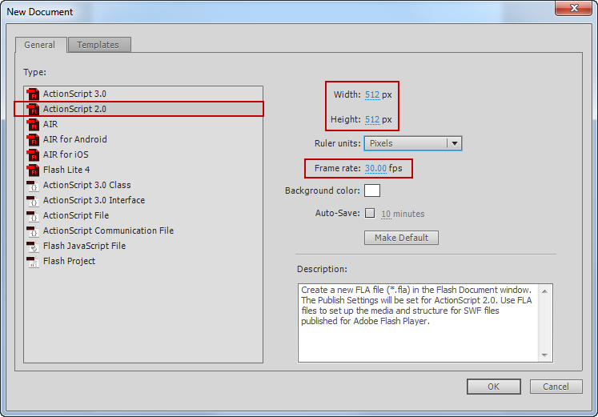
Справа Свойства выбор панели Флеш-плеер 8 как Цель.
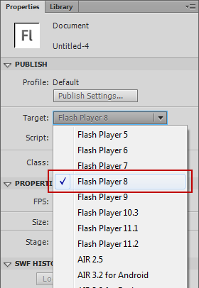
Теперь вы можете использовать Flash, как обычно, для создания сцены. На следующем снимке экрана показан пример перекрестия, уже преобразованного в Символ.
Прежде чем продолжить, убедитесь, что ваша фигура также преобразована в Символ (отметьте фигуры и выберите Преобразовать в символ... из контекстного меню). В нашем примере мы используем Графика-Символ.
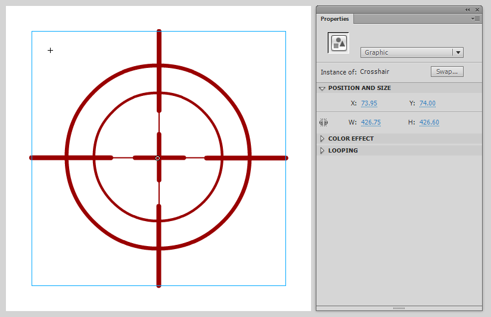
Анимация Flash Crosshair
Давайте заставим перекрестие вращаться, добавив несколько ключевых кадров в сцену со вспышкой.
Выбрать кадр 100 из Хронология и выбери Вставить рамку из контекстного меню.
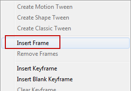
Выберите кадр от 1 до 100. и выбери Создать анимацию движения из контекстного меню.
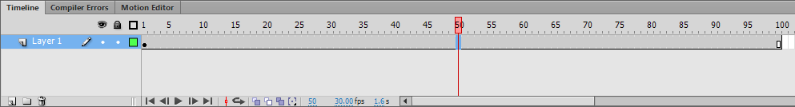
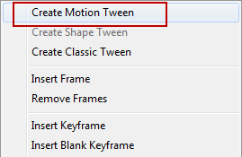
Перекрестие теперь готово к анимации. Выбрать кадр 25 и повернуть объект на 90 градусов. Продолжайте делать это, пока перекрестие не совершит один цикл.
- Кадр 1: исходное положение
- Кадр 25: вращать на 90 степень
- Кадр 50: вращать на 180 степень
- Кадр 75: вращать на 270 степень
- Кадр 100: вращать на 360 степень
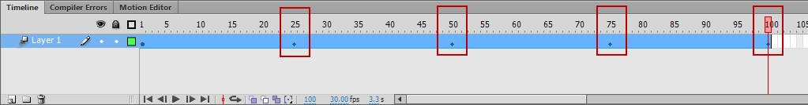
Если сцена выбрана и вы нажали Войти, вы получите предварительный просмотр анимации.
Флэш-файл делает нет необходимо настроить в режиме цикла.
Импорт перекрестия в движок
Флеш-анимация была успешно создана на предыдущем шаге.
Теперь пришло время экспортировать его, выбрав Файл -> Экспорт -> Экспорт фильма... и хранение SWF-файл где-то на вашем жестком диске.
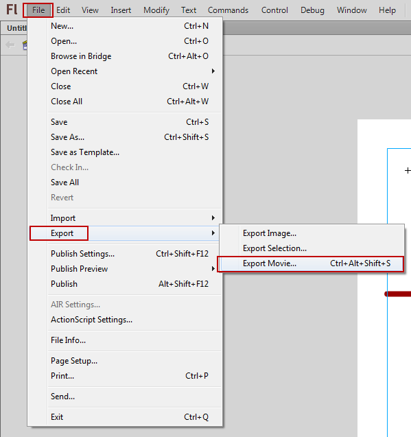
Чтобы иметь возможность загрузить флэш-файл, вам необходимо конвертировать SWF файл в GFX.
Самый простой способ сделать это — перетащить SWF файл поверх gfxexport.exe который находится в: <root>\Tools\GFxExport
Это создаст соответствующий GFX файл с таким же именем, расположенный в той же папке, что и файл SWF.
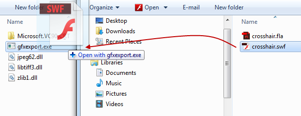
Создайте следующую структуру папок для движка и поместите GFX файл внутри: GameSDK\Libs\UI
root\GameSDK\Libs\UI\UIElementsВнутри папки UIElements создать новый xml файл, который содержит следующее содержимое. В зависимости от ваших настроек вам, возможно, придется изменить имя вашего GFX файл.
<!-- Category name, of your own choosing -->
<UIElements name="Crosshair">
<!-- Object name, again, of your own choosing -->
<UIElement name="Crosshair" render_lockless="1">
<!-- Point it to the correct files and give it some default settings -->
<GFx file="crosshair.gfx" layer="0">
<Constraints>
<Align mode="dynamic" valign="center" halign="center" scale="0" max="0" />
</Constraints>
</GFx>
</UIElement>
</UIElements>Ваш Flash MovieClip теперь готов к использованию в движке!
Привязка перекрестия к положению мыши
Идея попадания перекрестия в двигатель состоит в том, чтобы использовать источник света, который проецирует на пол флеш-фильм. Затем он будет прикреплен к текущей позиции курсора мыши.
Создайте источник света с помощью Сущность -> Свет -> Свет и вращать тот ось Y по 90 градусов. Теперь проекция направлена на пол.
Также убедитесь, что источник света находится не слишком далеко от пола (1-2 метра над землей должно быть нормально).
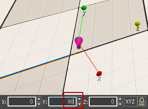
- Набор DiffuseMultiplier чтобы 10
- Установить Проектор: Текстура чтобы Crosshair.ui введя имя в текстовое поле (имя зависит от GFX имя файла)
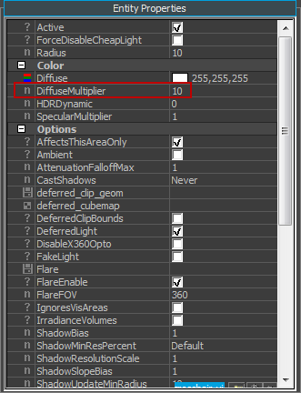 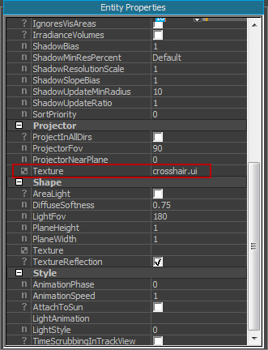
Свет теперь падает на пол. Если вы нажмете CTRL+Г войти игровой режим, вы можете заметить, что анимация также воспроизводится.
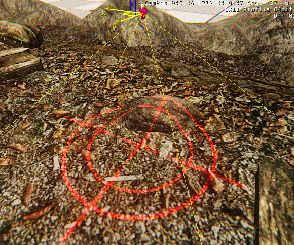
Возможно, вы захотите настроить некоторые значения света, как, например. ProjectorFov чтобы получить более крутой угол проецирования.
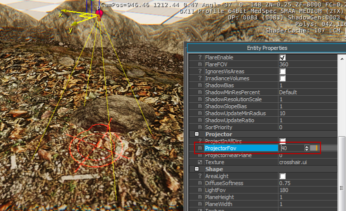
После того, как вы нашли хорошие настройки для света, выберите свет и выберите Создать Flow Graph из контекстного меню.
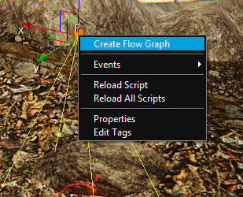
Это создаст новую блок-схему для этого легкого объекта. Чтобы перекрестие следовало за курсором мыши, постройте блок-схему, аналогичную показанной на рисунке ниже.
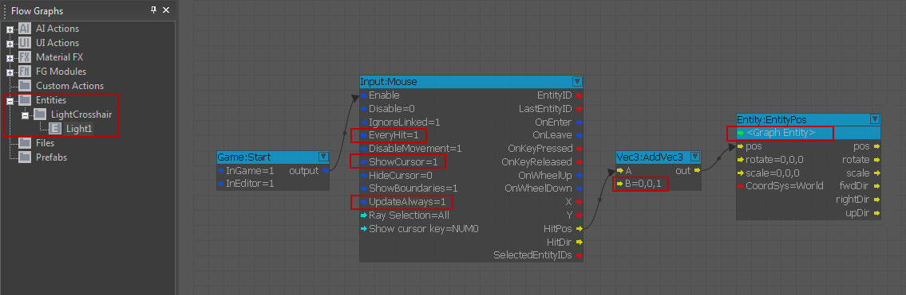